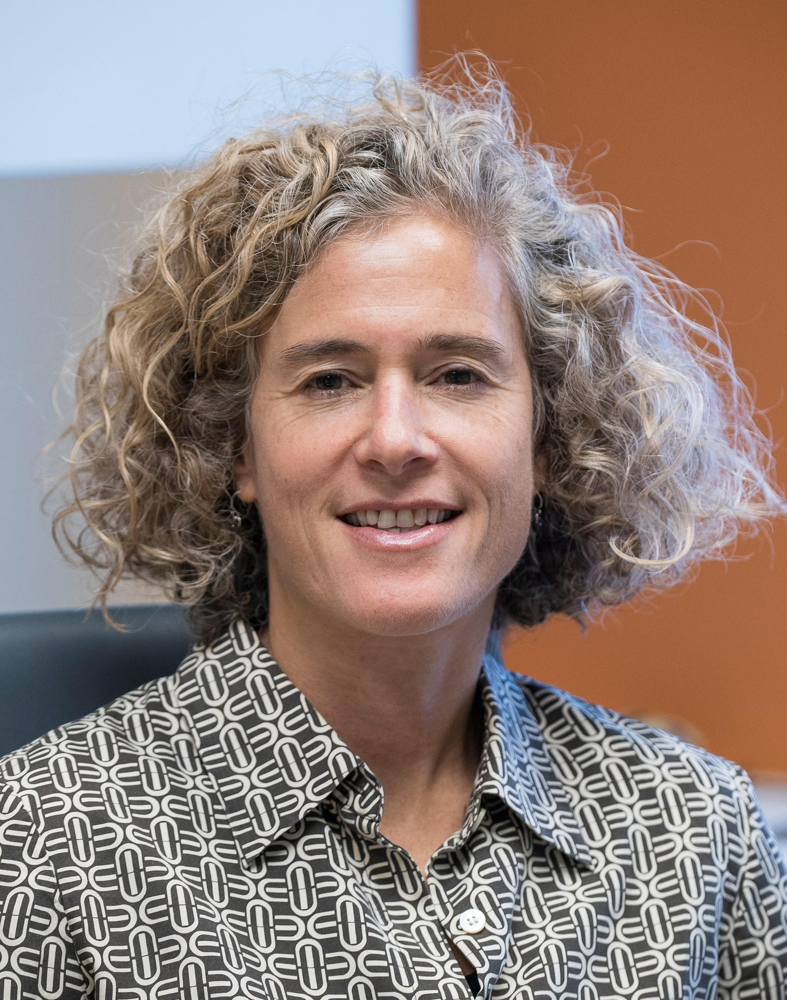

Program
On each day, the conference program starts at 09:00 EDT (Eastern Daylight Time = GMT - 04:00), which corresponds to 21:00 in China (GMT+08:00), 18:30 in India (GMT+05:30), and 15:00 in Spain (GMT+02:00).
(L) in front of a paper title refers to 20mins presentation time
(15mins talk + 5mins Q&A)
(S) in front of a paper title refers to 12mins presentation time
(10mins talk + 2mins Q&A)
(SS) in front of a special session talk title refers to 20mins presentation time
(18mins talk + 2mins Q&A)
|
Thursday - October 14, 2021 (Technology and Emerging topics) |
|
|---|---|
| Time (EDT) | Activity |
| 9:00 - 9:10 | Opening Remarks |
| 9:10 - 10:10 |
Keynote I: "Ultra-energy efficient, multi-terabit photonic
connectivity for disaggregated computing"
Speaker: Keren Bergman (Columbia University) |
| 10:10 - 10:55 | Regular Session I: "NoCs for DNN accelerators" |
|
(L) A Novel Network Fabric for Efficient Spatio-Temporal Reduction in Flexible
DNN Accelerators
(S) Analysis of on-chip communication properties in accelerator architectures
for Deep Neural Networks
(S) NewroMap: Mapping CNNs to NoC-interconnected Self-Contained Data-Flow
Accelerators for Edge-AI
|
|
| 10:55 - 11:00 | BREAK |
| 11:00 - 11:45 | Regular Session II: "Security and NoC routing" |
|
(L) Packet Header Attack by Hardware Trojan in NoC based TCMP and its
Impact Analysis
(S) Securing Network-on-Chips via Novel Anonymous Routing
(S) Denial-of-Service Attack Detection using Machine Learning in Network-on-Chip
Architectures
|
|
| 11:45 - 13:15 |
Special Session I: "Towards scalable multi-core
quantum computing architectures: Quantum Networks-On-Chip at rescue"
Chairs: Eduard Alarcón (Technical University of Catalonia) and Carmen G. Almudéver (Technical University of Valencia) |
|
Friday - October 15, 2021 (NoC Design and Systems) |
|
|---|---|
| Time (EDT) | Activity |
| 9:00 - 10:00 |
Keynote II: "AMD Chiplet Technologies and Implications on
Interconnect Architectures"
Speaker: Gabriel (Gabe) Loh (AMD Research) |
| 10:00 - 10:55 | Regular Session III: "NoC design for modern systems" |
|
(L) PlugSMART: a pluggable open-source module to implement multihop bypass in
Networks-on-Chip
(S) DUB: Dynamic Underclocking and Bypassing in Network-on-Chip for
Heterogeneous GPU Workloads
(S) Worst-Case Latency Analysis for the Versal NoC Network Packet Switch
(S) Synthesis of Predictable Global NoC by Abutment in Synchoros VLSI Design
|
|
| 10:55 - 11:00 | BREAK |
| 11:00 - 11:40 | Regular session IV: "Secure NoC-based systems" |
|
(L) Sentry-NoC: A Statically Scheduled NoC for Secure SoCs
(L) Multilayer NoC Firewall Services: Case-Study on E-Health
|
|
| 11:40 - 13:00 |
Special Session II: "Open Source On-Chip
Communication from Edge to Cloud: the PULP experience"
Chair: Davide Rossi (University of Bologna) |
|
(SS) PULP: An Open-Source RISC-V Based Multi-Core Platform for In-Sensor Analytics
(SS) An Open-Source Platform for High-Performance Non-Coherent On-Chip Communication
(SS) HERO: A Heterogenous Research Platform to Explore HW/SW Codesign and RISC-V manycore
accelerators
(SS) Manticore as an NoC Case Study: A 4096 Chiplet-based Architecture for Ultra-Efficient
Floating-Point Computing
|
|
| 13:00 - 13:15 | Concluding Remarks |
Keynote Talks
Keynote I
Date: Thursday - October 14, 2021
Time: 9:10 - 10:10
Speaker: Keren Bergman (Columbia University)
Title: Ultra-energy efficient, multi-terabit photonic connectivity for
disaggregated computing
Bio:

Keren Bergman is the Charles Batchelor Professor of Electrical Engineering at Columbia University
where she also serves as the Faculty Director of the Columbia Nano Initiative. Bergman received the
B.S. from Bucknell University in 1988, and the M.S. in 1991 and Ph.D. in 1994 from M.I.T. all in
Electrical Engineering. At Columbia, Bergman leads the Lightwave Research Laboratory encompassing
multiple cross-disciplinary programs at the intersection of computing and photonics. Bergman serves
on the Leadership Council of the American Institute of Manufacturing (AIM) Photonics leading
projects that support the institute’s silicon photonics manufacturing capabilities and Datacom
applications. She is the recipient of the 2016 IEEE Photonics Engineering Award and is a Fellow of
the Optical Society of America (OSA) and IEEE.
Keynote II
Date: Thursday - October 15, 2021
Time: 9:00 - 10:00
Speaker: Gabriel (Gabe) Loh (AMD Research)
Title: AMD Chiplet Technologies and Implications on Interconnect Architectures
Bio:
Gabe is a Senior Fellow in AMD Research. He received his Ph.D. and M.S. in computer science from
Yale University in 2002 and 1999, respectively, and his B.Eng. in electrical engineering from the
Cooper Union in 1998. Gabe was also a tenured associate professor in the College of Computing at the
Georgia Institute of Technology, a visiting researcher at Microsoft Research, and a senior
researcher at Intel Corporation. He is a Fellow of the ACM and IEEE, recipient of ACM SIGARCH’s
Maurice Wilkes Award, Hall of Fame member for the MICRO, ISCA, and HPCA conferences, (co-)inventor
on over one hundred US patent applications and ninety granted patents, and a recipient of a U.S.
National Science Foundation CAREER Award.
Special Sessions
Special Session I
Date: Thursday - October 14, 2021
Time: 11:45 - 13:15
Title: Towards scalable multi-core quantum computing architectures: Quantum
Networks-On-Chip at rescue
Chairs: Eduard Alarcón (Technical University of Catalonia) and
Carmen G. Almudéver (Technical University of Valencia)
Format: Three talks and a panel
Abstract:
The field of quantum computing has experienced a remarkable progress in the last years with the
development of intermediate-scale quantum processors. Despite its tremendous potential, it is still
unclear how quantum computing systems will scale-up to satisfy the requirements of its most
powerful applications. At architectural level quantum multi-core architectures are a firm candidate
to unlock the scalability of quantum devices. Nevertheless, a key enabling aspect of these is the
development of quantum network on chips (NOCs) for the quantum-coherent communication links among
cores. To this purpose, in this workshop we are bringing in experts from the three required
disciplines to address this challenge namely: i) quantum computing architectures; ii) quantum
communications and networking; iii) state-of-the-art NOCs for conventional computers.
Special Session II
Date: Friday - October 15, 2021
Time: 11:40 - 13:00
Title: Open Source On-Chip Communication from Edge to Cloud: the PULP experience
Chair: Davide Rossi (University of Bologna)
Format: Four talks
Abstract:
High performance and extreme energy efficiency are growing requirements for wide class of
applications ranging from ultra-low power IoT end nodes to high performance computing. While
parallelism and heterogeneity are well established techniques to deal with these challenges in the
high-performance domain, an increasing amount of embedded systems are embracing the same approach
to deal with the increasing complexity of near-sensor analytics applications. However increasing the
number and capabilities of compute cores poses a high-pressure on the on-chip communication network,
which has to sustain the extreme bandwidth generated by multiple powerful engines. In this special
session we propose an open source ecosystem for building computing systems from edge to cloud. The
sessions starts with a presentation of the Parallel Ultra-Low-Power project, an open-source platform
for near-sensor processing, followed by the presentation of an open-source AXI4 infrastructure and
its exploitation heterogeneous application processors and HPC many-core system.